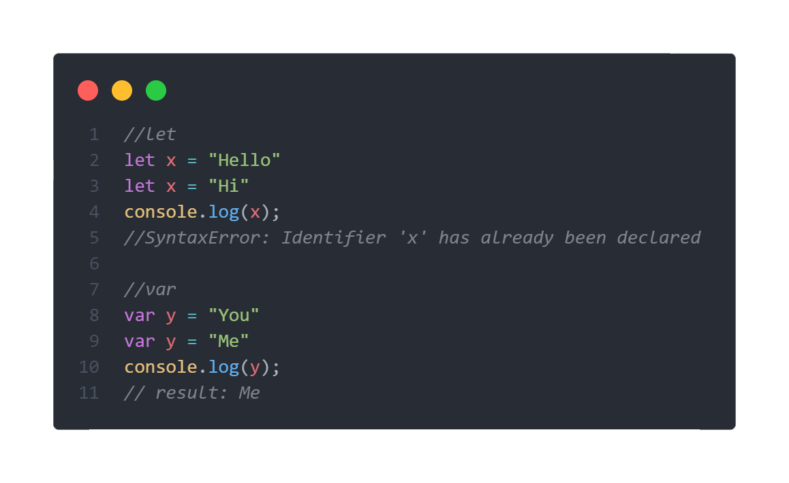
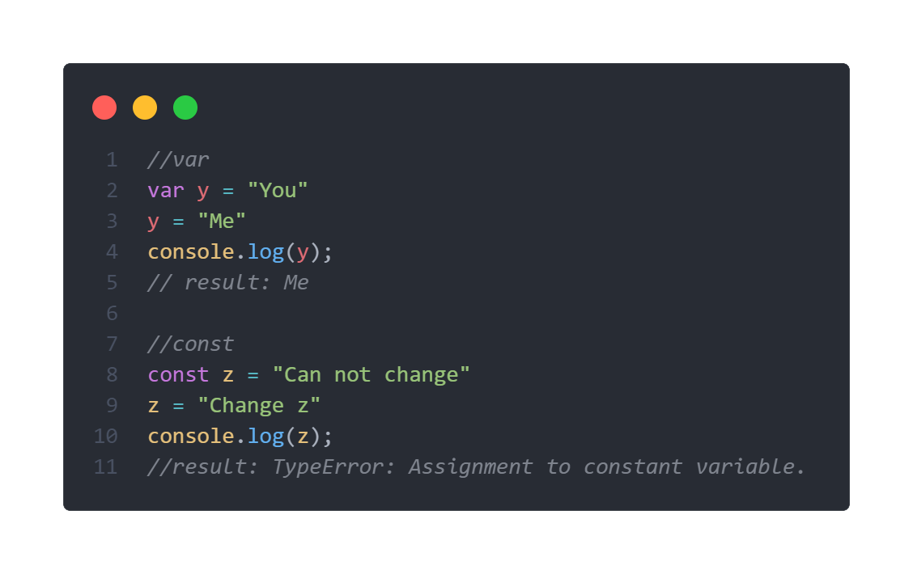
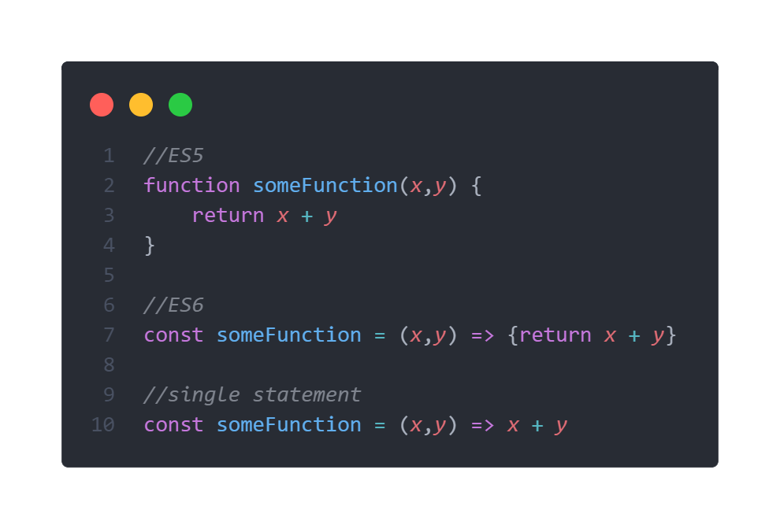
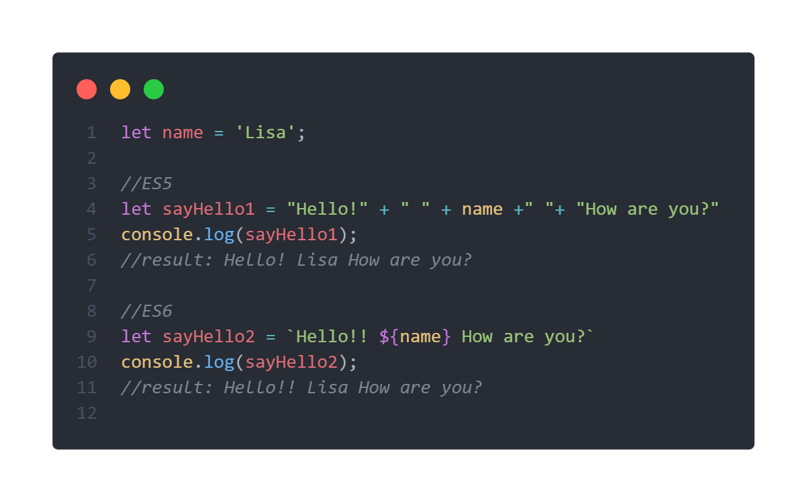
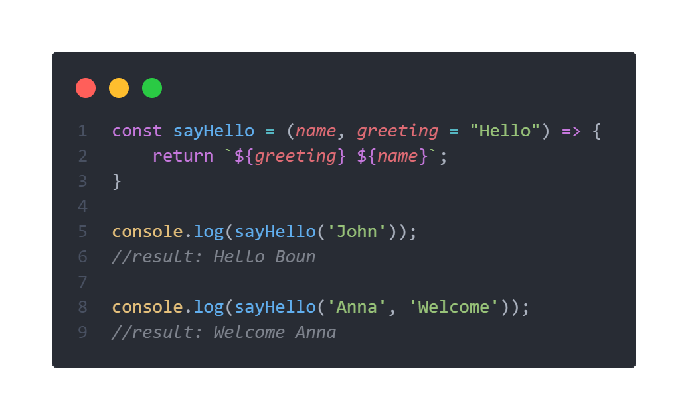
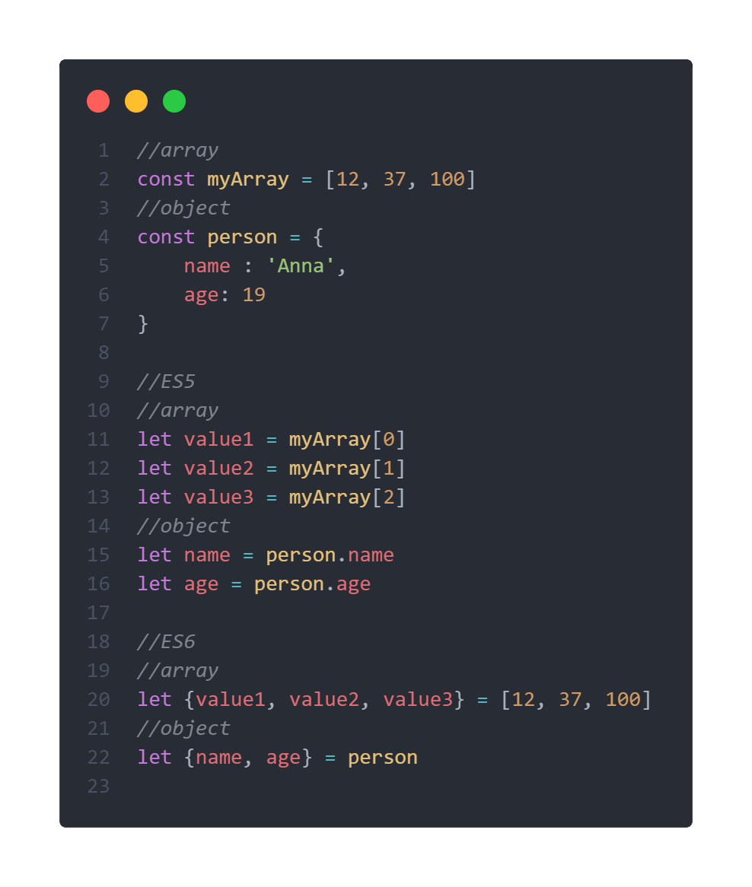
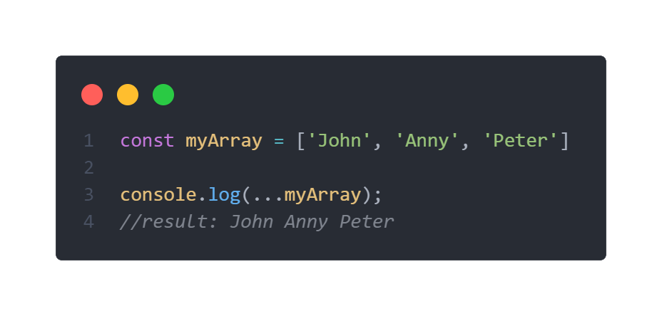
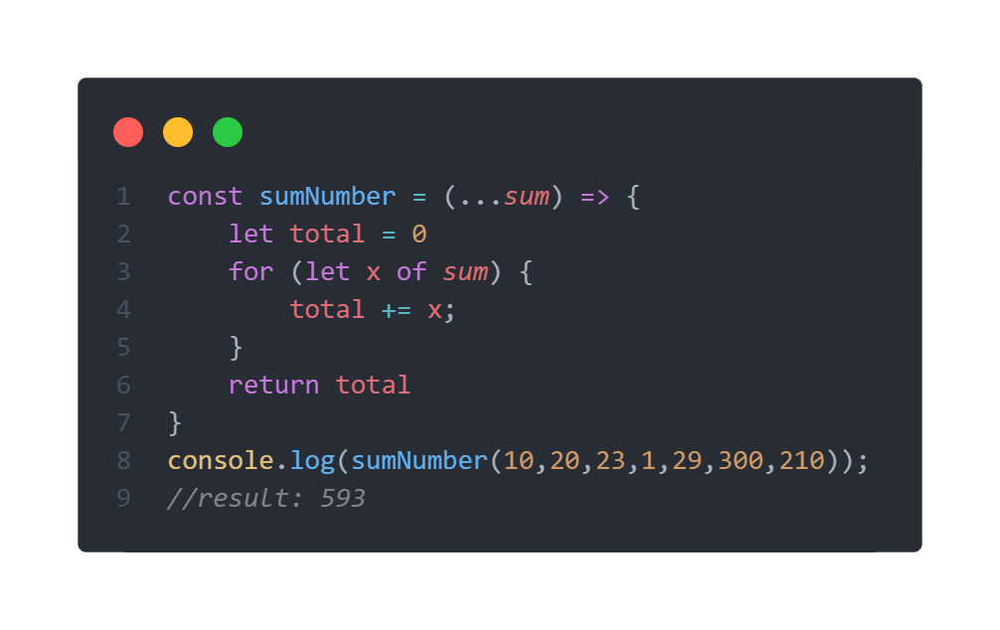
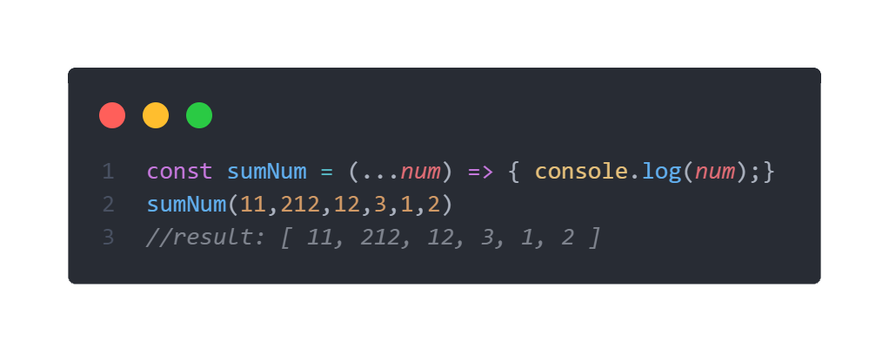

ກ່ອນທີ່ຈະເຂົ້າເນື້ອໃນເຮົາມາທຳຄວາມຮູ້ຈັກກັບ ECMAScript ກ່ອນເພື່ອຄວາມເຂົ້າໃຈທີ່ຫຼາຍຂຶ້ນ.
ECMAScript ແມ່ນພາສາ script ທີ່ເປັນມາດຕະຖານຂອງ Javascript ເຊິ່ງຈະມີຫຼາຍໆ version ໂດຍແຕ່ລະ version ຈະເພີ່ມຄວາມສາມາດຫຼືແກ້ໄຂຂໍ້ຜິດພາດຂອງ version ກ່ອນໆ ເຊິ່ງ version ທີ່ມີການປ່ຽນແປງຫຼາຍທີ່ສຸດກໍແມ່ນ ES6 ແລະ ເປັນ version ທີ່ຄວນສຶກສາໄວ້ຫຼາຍທີ່ສຸດ. ໂດຍໃນປະຈຸບັນໄດ້ມີການປ່ອຍ ES12 ອອກມາແລ້ວ.
ES6 ຫຼືທີ່ຮູ້ຈັກກັນໃນນາມ ECMAScript 2015 ນັ້ນແມ່ນຮູບແບບການຂຽນ Javascript ໃຫ້ມີຄວາມທັນສະໄໝຂຶ້ນ ມີຄວາມອ່ານງ່າຍ ແລະ ຂຽນໄດ້ສັ້ນລົງ ໂດຍ version ນີ້ໄດ້ເພີ່ມ feature ໃໝ່ ແລະ ແຕກຕ່າງຈາກແບບເກົ່າດັ່ງນີ້:
1. ການປະກາດຕົວປ່ຽນດ້ວຍ let, var ແລະ const
ໃນແບບເກົ່າເວລາເຮົາປະກາດຕົວປ່ຽນ ເຮົາມັກຈະໃຊ້ var ແຕ່ພໍມາໃນ ES6 ຈະນິຍົມໃຊ້ let ແລະ const ແທນ.
Keyword let ແຕກຕ່າງກັບ var ຢູ່ບ່ອນທີ່ let ບໍ່ສາມາດປະກາດຕົວປ່ຽນທີ່ປະກາດໄປແລ້ວຄືນໄດ້ຄືກັບ var ນີ້ກໍເພື່ອຫຼຸດຄວາມຜິດພາດຈາກການທີ່ປະກາດຕົວປ່ຽນຊ້ຳໂດຍບໍ່ໄດ້ຕັ້ງໃຈ. ເມື່ອມີການປະກາດຊ້ຳຈະຂຶ້ນ error.
ສ່ວນ keyword const ຈະໃຊ້ເວລາປະກາດຕົວປ່ຽນແບບຄົງຄ່າ (ບໍ່ສາມາດປ່ຽນແປງຄ່າໄດ້)
2. Arrow Function
Arrow Function ເປັນຮູບແບບການປະກາດ function ຫັ້ນລະ ແຕ່ຈະຂຽນໂຄດໄດ້ສັ້ນລົງ ແລະ ມີຄວາມເທ່. ໂດຍການປະກາດບໍ່ຈຳເປັນຕ້ອງມີຄຳວ່າ function (ຖ້າເປັນ single statement ບໍ່ຖ້າມີ keyword return ແລະ ເຄື່ອງໝາຍ {} ກໍໄດ້).
3. Template literal (`)
ໃນເວລາທີ່ເຮົາຕ້ອງການຕໍ່ຄຳ ຫຼື ປະໂຫຍກ ປົກກະຕິແລ້ວເຮົາມັກຈະໃຊ້ເຄື່ອງບວກ (+) ໃນການຕໍ່ ຫຼື ເຊື່ອມເຂົ້າດ້ວຍກັນ. ແຕ່ມາໃນ ES6 ສາມາດໃຊ້ເຄື່ອງໝາຍ backtick ( ` ) ແທນໄດ້ດັ່ງຕົວຢ່າງຂ້າງລຸ່ມນີ້
ແນະນຳ: `${variable}` ເປັນການດຶງເອົາຄ່າທີ່ຢູ່ໃນຕົວແປນັ້ນມາສະແດງ.
4. Default Parameters
Default Parameters ແມ່ນການທີ່ເຮົາຕັ້ງຄ່າເລີ່ມຕົ້ນໃຫ້ແກ່ parameter. ເມື່ອບໍ່ມີການຮັບຄ່າໃໝ່ເຂົ້າມາ ມັນຈະສະແດງຄ່າເລີ່ມຕົ້ນນັ້ນແທນ.
ໃນບັນທັດທີ່ 5 ບໍ່ມີການປ້ອນຄ່າໃໝ່ໃຫ້ແກ່ greeting ດັ່ງນັ້ນຄ່າທີ່ອອກມາຈະໄດ້ ‘Hello’ ຕາມທີ່ໄດ້ຕັ້ງຄ່າໄວ້. ສ່ວນໃນບັນທັດທີ່ 8 ໄດ້ມີການປ້ອນຄ່າໃໝ່ໃຫ້ແກ່ greeting ດັ່ງນັ້ນຄ່າທີ່ອອກມາກໍຈະເປັຮຄ່າທີ່ປ້ອນເຂົ້າໄປໃໝ່ ນັ້ນກໍຄື ‘Welcome’.
5. Destructuring
ໃນ ES5 ຫຼື versionເກົ່າ ເວລາທີ່ເຮົາຕ້ອງການດຶງເອົາຄ່າໃນ Array ຫຼື Object ເຮົາຕ້ອງໄດ້ສ້າງຕົວແປມາຮັບເທື່ອລະຕົວ ແຕ່ພໍມາໃນ ES6 ເຮົາສາມາດດຶງເອົາຄ່າອອກມາໄວ້ໃນຕົວແປໄດ້ເລີຍ
ໃນ ES5 ນັ້ນເວລາທີ່ເຮົາຕ້ອງການນຳເອົາຄ່າໃຫ້ກັບ Array ຫຼື Object ເຮົາຕ້ອງໄດ້ສ້າງຕົວປ່ຽນມາເກັບເທື່ອລະຕົວ (ບັນທັດທີ່ 11-16). ແຕ່ພໍເປັນ ES6 ເຮົາສາມາດເຮັດຄືກັບບັນທັດທີ່ 18-22 ໄດ້ເລີຍ.
6. Rest Operator (…)
Rest operator ຫຼື Spread operator ໃຊ້ເພື່ອກະຈາຍຂໍ້ມູນທີ່ຢູ່ໃນ Array ໄດ້ .
ນອກຈາກີ້ຍັງສາມາດນຳໄປປະຍຸກໃຊ້ກັບ function ໄດ້ແບບນີ້.
ຂໍ້ຄວນລະວັງ: ເມື່ອເຮົາໃຊ້ Rest operator ກັບ parameter ຄ່າທີ່ໄດ້ຈະເປັນຊະນິດຂໍ້ມູນຂອງ Array.
.png)

.png)